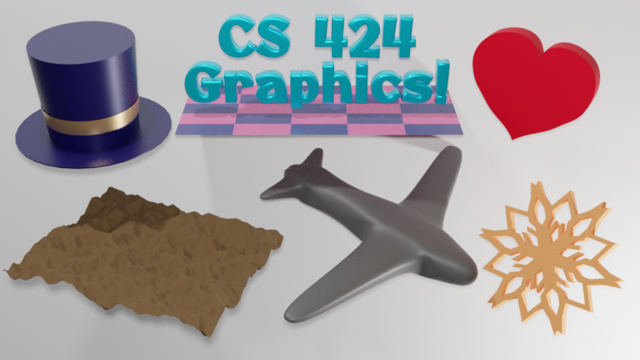
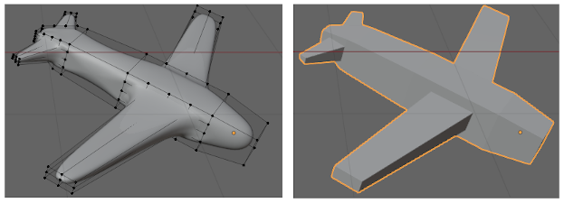
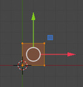
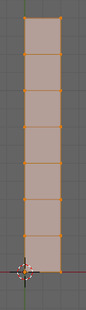
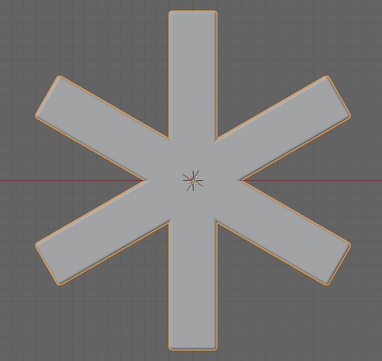
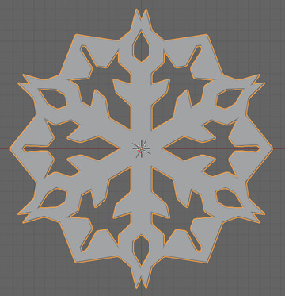

CS 424: Computer Graphics, Fall 2021
Blender Lab 2: Blender Modeling
This is the second lab using the 3D modeling and animation program, Blender. The assignment for this lab involves using Blender's modeling capabilities to design custom objects. At the same time, you should get more comfortable and skilled at using Blender.
Most of this lab is based on the material in Section B.2 in Appendix B of the textbook. I will not repeat all the relevant information from that section, but there are some links in the instructions below.
There will be another Blender lab in two weeks. The work from this lab will be collected along with the work from the next Blender lab.
The Assignment
For this lab, you will make five, or possibly six, objects in Blender. There are specific requirements for each object, which are discussed below. Here is a rendered image of my six objects (the plane with the checkerboard pattern doesn't count):

You are required to make either a tophat or a snoflake similar to mine. (Maybe there will be some extra credit if you make both.) Your other four objects will be of the same type as my objects, but might look very different.
You can use the file modeling.blend as a starting point if you want. (There is a copy in /classes/cs424.) That file has a large white plane to serve as a background, and it has lighting already set up. It also has the "4 View" screen that you used in the previous lab. You can use a different starting point if you prefer, as long as you can make a rendered image showing all five or six objects. (You want to make sure that the option "File" menu / "External Data" / "Automatically pack into .blend" is turned on. This option tells Blender to include things like image files and fonts in the .blend file. If it is turned off, then when the file is moved, it probably won't be able to access the data files that it needs.)
My strong suggestion is that when working on an object, select it then hit the "/" key, which lets you work on that object in isolation. To return the view of the entire scene, hit "/" again.
When you turn in your work, you should turn in a .blend file and a rendered image. The names should be modeling.blend and modeling.png, or something that is equally recognizable.
Curve
The first two objects should be easy. For the first, you should make an object based on a Bezier curve or NURBS curve. Curves are discussed in Section B.2.2. Curves are in the "Curve" submenu of the "Add" menu.
You should set the curve to be 2D and set the Fill mode to "Both". Then extrude it into the third dimension. It would be nice to add some beveling. All this is discussed in the textbook. It might be nice to make an object with a hole in it, like the yellow shape in the image from the textbook. In any case, it has to be more than just a disk! All this is discussed in Section B.2.2.
{kind=link}
The curve-shape in my version is the heart in the upper right. It did not turn out very well. It's made from a subdivided Bezier circle, but I found it hard to edit the Bezier handles to get exactly the shape that I wanted. Also, it turned out that beveling couldn't handle the sharp points nicely.
Text
The second shape is a Text object. (Select "Text" from the "Add" menu.) Blender support for text is discussed in Section B.2.1. The text can say anything you want, but it must be extruded into 3D, and it should be beveled. Don't use the font that is bulit into Blender. Choose one of the fonts from /classes/cs424/fonts-for-blender or grab one from somewhere else. My text uses Otomanopee_One. Note that if you open a font file in the Linux file browser, you see samples of the font.
(I added the checkerboard plane to see a shadow of the text, but it doesn't actually make much of a shadow, given the lighting setup.)
Displace Modifier
A "mesh modifier" can be added to a mesh object to affect that mesh in some way. Modifiers are discussed in Section B.2.5. For this object, you will need the Displace modifier, which is discussed near the end of that subsection.
You should start with either a Mesh Icosphere or a Mesh Grid. For displacement to work nicely, you need a finely divided object with lots of vertices close together. Just after adding the object, you have a chance to set its properties. For an Icosphere, you can set its "Subdivisions" property to 6. For a Grid, you can set its "X Subdivisions" and "Y Subdivisions" properties to 100. Now you want to add a "Displace" modifier to the object. I quote the relevant paragraphs of instructions from the textbook:
To use a texture as a displacement map on the selected Mesh object, go to the "Modifier" controls and add a "Displace" modifier, which you will find towards the top of the "Deform" section of the popup menu. You will see the mesh jump, because the default displacement is one. To use a texture as the displacement map, you will need to add a texture to the displacement controls and then edit the texture. Click the "New" button at the top of the displacement modifier controls to add a new texture (or select an existing texture using the popup menu to the left of "New"). Then go the "Texture Properties" tab of the Properties Editor. (The button for the Texture Properties is the one at the very bottom.) Here you can select the "Type" of texture. For example, a "Clouds" procedural texture often works well. You can also use an "Image" texture, and Open an image to be used as a "height map" for the displacement. (Height maps are often used to make natural-looking terrain.) You can sometimes get an interesting effect by using an image both for the base color of the material and as the displacement map for a mesh.
You should see the effect on the Mesh immediately. You will almost certainly want to go back to the Modifier properties and decrease the "Strength" of the modifier to make the displacement effect less extreme. Also you will probably want to use Smooth Shading for the mesh. (To make the mesh even smoother, you might add a Subdivision Surface modifier to the mesh, before the Displace modifier. Note that you can drag modifiers around in the Modifier Properties panel.)
Pay attention to the bit about the "Strength" of the modifier. You should end up with either a bumpy sphere or a bumpy plane.
Extruded Mesh with Subdivision Surface Modifier
The object in my picture that looks like a toy airplane was made by extruding a mesh and then applying a Subdivision Surface modifier to the mesh. You are not required to make an airplane, but you should make something using extrusion and subdivision surface. Extrusion is described briefly in Section B.2.4 and the Subdivision Suface modifier is described in the first part of Section B.2.5. But here is how is how I made the airplane:
Mesh extrusion is done in Edit Mode. Add a Mesh Cube to the scene (and hit the "/" key), and put it into Edit Mode by hitting the tab key. Select the four vertices on the right (+X) side of the cube. (Be sure to select all four and nothing else.) Change the view to look directly down the +Z axis. Hit the "E" key, meaning "Extrude." This makes a duplicate of the right face of the cube, in exactly the same location as the original. The duplicate is in "Grab" mode, which means that simply moving the mouse (or pressing arrow keys) will move it. Move it to the right, and click the left mouse button to stop dragging. The duplicate is still selected. Hit the "E" key and drag the duplicate to the right again. Do that several times, and you get something like a stack of boxes. (Two of the boxes will be used to make wings. The one for the front wings should be longer than the other boxes.)
Now, to make a wing. Select the four vertices on one of the sides of one of the boxes. Subdivide twice (that is, right click to get a popup menu, and select "Subdivide", twice). Select the nine vertices at the center of the subdivided side. Change the view so that you are looking at the side edge-on (probably looking down the X axis). Hit the E key to extrude, and move the mouse to drag the duplicate out to the length of the wing before clicking the left mouse button to finish the drag. Then scale the duplicate in one direction to make the tip of the wing narrower, and maybe translate it a bit to make the wing come out of the body at an angle. After doing this for all four wings, you should have something like the boxy plane shape shown on the right in this picture:

To get the smooth plane shape, exit edit mode. Leave the mesh selected, and add a Subdivision Surface modifier. (Subdivision surface is about 2/3 of the way down the "Generate" column in the Add Modifier popup menu.) In the Subdivision Surface controls, there are two numerical inputs labeled "Levels Viewport" and "Render". Increase them both to 3. (This sets the number of times the surface is subdivided in the Blender window and in rendered images, respectively.)
Finally, be sure to set the shading of the object to "Shade Smooth". The left side of the above image shows the finished airplane in Edit mode. You see the vertices of the unmodified, boxy shape. You can still edit them, if you want.
Tophat with Band
Remember that you need to do either the tophat or the snowflake, not both. For the tophat, you can follow these instructions carefully. The number of steps probably makes this look harder than it is. It might be a good idea to read through the instructions before starting.
- Make sure that the 3D cursor is still at the origin. (If not, use "Object" menu / "Snap" / "Cursor to World Origin".)
- Add a Mesh Circle, and set the number of vertices. Hit the "/" key so you are only working on the circle.
- Switch the view to the view from the +Y (or +X) direction, so you are viewing the circle edge-on.
- Put the circle into Edit Mode.
- All the vertices should still be selected. Hit the "E" key to extrude, and move the mouse to drag the duplicate circle straight up, in the Z-direction. This makes the side of the top hat. (Hold down the control key while dragging, or hit the "Z" key, to make it possible to move the circle exactly straight up.) Remember to click the left mouse button to end the drag. You might need to zoom out before doing this, to make room.
- With the vertices at the top of the hat still selected, hit the "F" key. This will fill in a face between the selected vertices, to make the top surface of the hat.
- Now, select all the vertices on the bottom of the hat. Make sure that they are all selected!
- Hit "E" again, but immediately hit the ESC key to end grab mode without moving the duplicate circle.
- With the duplicate still selected, use the "S" key or a manipulator to scale the duplicate, to make the brim of the hat.
- Exit Edit mode
- Set shading to "Shade Smooth". The hat won't look right because some edges have been shaded smooth that shouldn't be. To fix that, with the hat selected, go to the Object Data Properties (third icon up from the bottom in the Properties pane). Open up the "Normals" section, and click the "Auto Smooth" option. The edges of the hat should now look right.
- The hat is still infinitely thin. To fix that, add a "Solidify" modifier to the hat (about 2/3 of the way down the "Generate" column of the Add Modifier popup menu). Adjust the "Thickness" to your taste.
- Give the hat a material — dark blue or whatever color you like.
- Now for the band around the hat... If you have rotated the hat, delete the rotation by hitting ALT-R while the hat is selected. If you moved it, hit ALT-G to delete the translation. It's important that it be exactly back at the origin.
- Add another Mesh Circle. You can immediately scale it up to see that it's there.
- View the hat from the +X direction. Just like you did for the original circle, use the "E" key with the new circle in edit mode and make it into a cylinder, by dragging the duplicate circle straight up.
- Leave Edit Mode, and drag the band straight up to the height that you want it be in the end.
- Scale the band in the X and Y directions to match its diameter as closely as possible to the diameter of the hat, without letting it disappear inside the hat. If necessary, adjust the width of the band by scaling it in the Z-direction only.
- Add a material to the band.
- To finish the tophat, parent the band to the hat. (Click the band, shift-click the hat, and use Control-P.)
- Hit "/" to return the full view, and move the hat into position.
Snowflake
Remember that you need to do either the snowflake or the tophat, not both. The snowflake is an exercise in using modifiers. The point, of course, is to get the exact six-fold symmetry. When I wanted to make a snowflake, I watched a YouTube video to find out how to do that. It wasn't a very good video, but I was able to figure out what it was doing.
Make sure that the 3D cursor is still at the origin. (If not, use "Object" menu / "Snap" / "Cursor to World Origin".) Add a Mesh Plane, and hit the "/" key so that you can work only on that plane. View the plane from the +Z direction, and zoom out so that the plane is pretty small, leaving room to work.
 A Mesh has a "center point," which is not necessarily at the center. Rotation is rotation about the center point. You can't move the center point, but you can go into Edit mode and move all the other vertices. The center point of the plane is at the origin. You want both the center point and the lower left corner of the plane to be at the origin. Put the plane into Edit Mode. Make sure all the vertices are still selected, and drag them using a manipulator or the "G" key one unit up and to the right. Hold down the control key while dragging to limit the displacement to unit distances. The picture at the left shows the result, using a manipulator.
 Now, you want to turn the plane into a connected pile of rectangles, like the one shown at the right. Select just the top two vertices. Hit the "E" key to extrude, and drag the duplicate straight up before clicking the left mouse button. Repeat the process several times: Hit "E", then drag straight up, and press the left mouse button. Shorter and more numerous rectangles might give you better control later.
Exit from Edit mode. The next step is to add an Empty, which will be used to generate symmetric copies of the original, using an Array modifier later. Add an Empty (Plain Axes will do). You want to apply a rotation of exactly 60 degrees about the Z-axis. Make sure the Empty is selected, and hit the "N" key, which will show the numerical transformation controls. Enter 60 for the Z value under "Rotation." Hit "N" again to hide the controls.
Parent the Empty to the Plane. (Click the Empty to select it, shift-click the Plane, and use Control-P.) If you don't do this, the snowflake will fall apart when you try to move it.
Next, you want to add a "Mirror" modifier to the Plane. Make sure the Plane is selected. The Mirror modifier is about half-way down the "Generate" column in the Add Modifier popup menu. The default settings are OK. This will make one copy of the Plane.
Then add an "Array" modifier, from the top of the Generate column. For this one, you need to modify the settings. Set the "Count" to 6 to get six copies. Uncheck the "Relative Offset" option. Check the "Object Offset" box. When this is checked, the change from one copy to another is a copy of the transformation of some object. Click the triangle to reveal the setting in the "Object Offset" section. Select the Empty from the popup menu labeled "Object." Each copy will then be rotated 60 degrees from the previous copy. It should look like this:

You have snowflake-style symmetry! And that symmetry will be maintained as you edit the Plane in Edit Mode. You will only see vertices on the original copy. You might want to select all of the vertices along the right edge and drag them to left a bit, to make the arms narrower.
You can edit the vertices any way you like. Try selecting one vertex and dragging it. Try selecting a square of vertices and dragging it. Try selecting two neighboring vertices on the right edge and extruding. You can subdivide edges if you need to. Here is what I ended up with after making some changes along these lines, as I was writing out these instructions:

As a final touch, I added a Solidify modifier and a Bevel modifier to the Plane. And a material of course.
Hit the "/" key to return to a full view of the scene. You will probably find that you need to scale down the snowflake quite a bit.